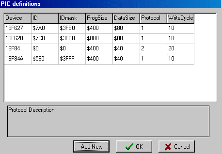

It's important to follow the steps described below in the right order, because applying a voltage to the programmer pin of the PIC, without the PIC is supplied from a +5Volt source, can damage the PIC.
| Hardware
Program History Downloads |
Mindstorms & PICsprogrammer (software) |
16-12-2001 |
| File | Commands | Tools | Help | Misc. | |
| Open
Save Exit |
Read Device Read ID Verify Device Write Device Erase Device |
Settings PIC Definitions |
Help
|
Program Start Data Memo's Device dependancy Protocols F84 <> F84A Hex File |
Operating Instructions 
It's important to follow
the steps described below in the right order, because applying a voltage
to the programmer pin of the PIC, without the PIC is supplied from a +5Volt
source, can damage the PIC.
Program start 
On opening of the program, all settings are
read form the inifile ("applicationnam.ini") and the last hexfile is automatically
loaded.
The program can be started automatically from
another program (i.e. JAL-IDE), in which case parameters can be passed through
the command line:
mind_picprog.exe d:\data_test\aap.hex PIC16F84 programThe first parameter is the name of the hexfile (including full path) to be used to program the device.
File Open 
Opens a hex file for reading. After openning
the file, all the data is put in the corresponding memo fields.
The hex file must be a INXH8M file format,
see below for details. The file may contain
program data, config data and EEprom data data.
File Save 
Saves all information (program, config and
data) on the screen in a INXH8M file format.
Exit 
Closes the program, after storing all settings
in the inifile.
Command Read Device 
Reads program, data (eprom) and configuration
memory and places the contents in the corresponding memofields.
If in the program memory a complete row
is empty ($3FFF), then this row is not displayed. Config and data values
are always shown.
The configuration memory ($2000 .. $2007)
is both displayed in the corresponding memo and in the corresponding edit-
and check-boxes.
The device-ID is checked against the selected
device, and if a difference is encountered, a message is placed in the history
memo.
Command Read Device-ID 
Reads only the Device-ID and puts it (only)
in the corresponding edit-box.
The device-ID is checked against the selected
device, and if a difference is encountered, a message is placed in the history
memo.
Command Write Device
Writes program, data and configuration memory.
If no device is specified or if the device-ID
differs from the selected device, no writing is performed and an error message
is displayed.
Verifying of the data can be done during
programming and/or after programming (controled by Tools / Settings / ...).
If verifying is done during programming,
each word is checked and if an error is found the programmer retries a number
of times (can be set by Tools / Settings / Nr. of retries). If, after the
maximum number of retries, still an error occurs, the programming is aborted.
After programming is done the programmer displays the total number of retries.
So a good setting is:
+ Verify during programmingWriting the device is time-optimized. First the first words of the device are compared to the words in the buffer, if there are differences a "bulk-erase" is performed, otherwise no "bulk-erase" is performed. After that, each word is only programmed if the word in the device and the word in the buffer are different. So if a device is programmed twice, no programming at all will take place the second time, only a device read.
- Verify after programming (there's absolutly no need for}
Number of retries = 3
Writing is device dependant, see
device dependant settings.
Command Verify Device
If more than 20 errors are encountered,
the program is aborted and an error message is displayed.
The device-ID is checked against the selected
device, and if a difference is encountered, a message is placed in the history
memo.
Command Erase Device 
Erases all, i.e. program, data and fuses.
After an erase cycle, there's no automatic
verify cycle.
Erasing is device dependant, see
device dependant settings.
RUN command 
With the RUN command (ok it's a strange symbol for that), you're first
prompted to set the switch on the programmer to "RUN" after which the MCLR-line
of the PIC is controled by the DTR-signal. Pushing on the RUN button will
start the PIC by pulling the MCLR line high.
Pressing the RUN button again, will reset the PIC , prompt the user to
set the programmer switch back to "Program" and enter the program/verify
mode again.
Help 
Shows this help text in your own default
browser.
| PIC definitions Tools / PIC Definitions / ... ID stands for the device-ID. You can add new devices just by walking with the cursor to the bottom of the table (or by pressing button "Add New"). Numbers be inserted decimal or hexa-decimal (with a preceeding '$' sign). Enter-key can be used to step through the fields of the table. |
 |
Protocol 1,2 
Before writing the device, always an erase is
performed, with an explicit disabling of the codeprotection. In this way protocol
1 and protocol 2 could be mad almost equal. The only difference is the extra
erase of the data-segment in the case of protocol 2.
Below you see the codes that are used in the
program.
| Read Device + Verify | Read ID | Write | Erase |
| generate Vpp
Prog: Data: $00 + dummydata Vpp down |
generate Vpp
$00 + dummydata Vpp down |
ERASE (see next column)
generate Vpp Prog: Data: Config: Vpp down |
Generate Vpp
$00+$1FFF80 for 1 to 7 do $01
This part only yields for protocol 2, "erase datasegment" $03 + $1FFF80 $01 $07 $08 delay(writecycle) $01 $07 Vpp down |
Write / Erase cycle time
16F84 = 20 msec (see note 1)note1: Microchip isn't clear about this parameter, the official datasheet only specifies a typical value of 10 msec, no maximum value is specified. In the migration document 16F84 ==> 16F84A, a maximum value of 20 msec is specified for the 16F84. But from my own experiments I conclude that this is too low for a reliable programming of the device (even with retries).
16F84A = 10 msec (specification is 8 msec maximum)
| Question What is the erase/cycle time of 16F84 ? I'm developing a prototype programmer and miss the specification for the erase/write cycletime of the 16F84-10. Your datasheet DS 30430C only specifies a "typical" value of 10 msec. In the migration document DS 30072A you specify a maximum value of 20 msec. So I first designed the programmer with a erase/write cycletime of 20 msec, the results were totally unpredictable, sometimes it worked sometimes it didn't. After increasing the erase/write cycle time to 50 msec, programming errors didn't occure anymore. |
Answer from Microchip The erase write cycle time is the same for all parts as they all use the same die. The difference between parts lies in how they are tested. The erase/write times are a function of the die itself rather than the testing process. The data sheet has a footnote which explains that the erase/write times are characterised but not tested i.e we have designed the device to operate within these parameters but we do not test for this since it is not a critical operating parameter. Therefore it is possible for the timing to be slightly greater than the design maximum on this parameter. To gain an avarage you may wish to program a larger set of parts from the same and different batches to determine a statistical average for the devices and then adjust your programming time c/w a margin of error to suit the average. Best Regards, UK Techhelp |
Differences between 16F84 en 16F84A 
The A-type has a maximum oscillator
frequency of 20 MHz (instead of 10 MHz).
There are some small timing differences,
of which the most important seems to be: MCLR low puls width, erase/program
cycle time.
For simple programmers, which dereive
their supply power from the RS232 lines, their is one other difference, although
the specified maximum supply current during programming is 10 mA, the specified
typical value is for the 16F84 is more then twice as high as for the 16F84A.
See for further details
PIC16F84 to PIC16F84A Migration. Remark: the mentioned write/erase-cycle
time of the PIC16F84 is not correct (see above).
Hex file format 
INHX8M, this format produces one 8-bit
hex file with a low byte, high byte combination. Since each address can only
contain 8 bits in this format, all addresses are doubled. This file format
is useful for transferring PICmicro MCU series code to PRO MATE II, PICSTART
Plus and third party PICmicro MCU programmers.
Each data record begins with a 9 character
prefix and ends with a 2-character checksum. Each record has the following
format:
:BBAAAATTHHHH....HHHCC
where:
BB - is a two digit hexadecimal byte
count representing the number of data bytes that will appear on the line.
AAAA - is a four digit hexadecimal address
representing the starting address of the data record.
TT - is a two digit record type record
type that will always be '00' except for the end-of-file record, which will
be '01'.
HH - is a two digit hexadecimal data
byte, presented in low-byte/high-byte combinations.
CC - is a two digit hexadecimal checksum
that is the two's complement of the sum of all preceding bytes in the record.
| V1.9 |
 Non-contiguous blocks weren't programmed correctly, bug fixed Non-contiguous blocks weren't programmed correctly, bug fixed |
| V1.8 |
- edit program area, what for ? |
| V1.7 |
|
| V1.6 |
|
|
|
|
|
16-12-2002 |
|
| V1.3 8-11-2001 |
|
| V1.2 27-10-2001 |
|
| September 2001, V1.1 | Erase/write cycle time of 16F84A + unknown changed from 10 to 50 msecS |
| September 2001, V1.0 | First release, with explicit facilities for 16F84 and 16F84A |
| Mind_PicProgV1_9.zip (300 kB) |
Zip-file, containing executable program
(for help files, download and extract first V1.3) |
| Mind_PicProgV1_7.zip
(300kB) |
Zip-file, containing executable program
(for help files, download and extract first V1.3, sorry for this inconveniance, but I'm rearanging all my html files) |
| Mind_PicProgV1_4.zip (500kB) | Zip-file, containing executable program (see for help files V1.3) |
| Mind_PicProgV1_3.exe (500kB) | Selfextracting zip-file, containing executable program and help files |
| Mind_PicProgV1_1.exe (315kB) | Selfextracting zip-file, containing executable program and help files |
| Mind_PicProgrammer_sources.zip
(... kB) |
Containing all sources of the latest
version, including
|